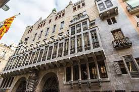

Conçu entre 1886 et 1888 par Antoni Gaudí à Barcelone, le Palais Güell est une pièce maîtresse du modernisme catalan. Commandé par le mécène Eusebi Güell, cet édifice illustre l'ingéniosité de Gaudí avec ses formes audacieuses et ses détails ornementaux. La façade impressionnante est ornée de sculptures, de tuiles de céramique et de fer forgé, créant une esthétique unique. L'intérieur du palais présente un mélange de styles artistiques, avec des éléments architecturaux uniques. Le toit, parsemé de cheminées excentriques, offre une vue panoramique sur Barcelone. Le Palais Güell témoigne du génie créatif de Gaudí au service de l'art et de l'innovation architecturale.
